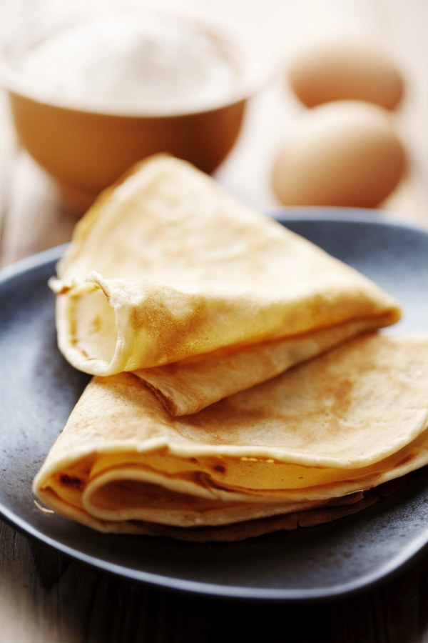
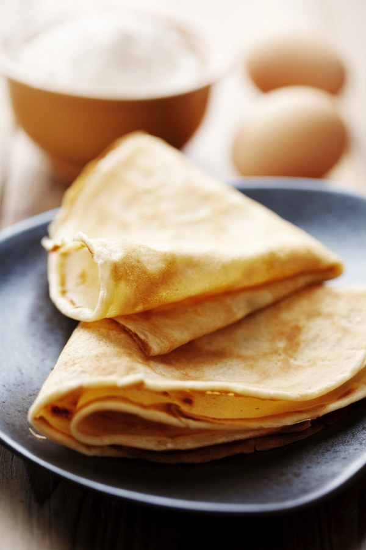

Pâtes à crêpes simple
Selon nos informations, cette recette est compatible avec le régime suivant : végétarien
TEMPS TOTAL : 17 MIN
 


Ingrédients
- 5 oeufs
- 500g de farine
- 1 litre de lait demi-écrémé
- 3 cuillères à soupe d'huile
- 1/2 verre de bière
Préparation
Etape 1
Dans un saladie, verser la moitié de la farine, puis rajouter les oeufs un à un, rajouter ensuite un de lait puis de la farine puis à nouveau du lait et ainsi de suite.
Etape 2
Enfin rajouter l'huile et la bière
Etape 3
Laisser reposer 1 heure, votre pâte est prête